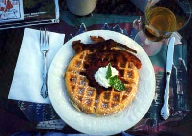
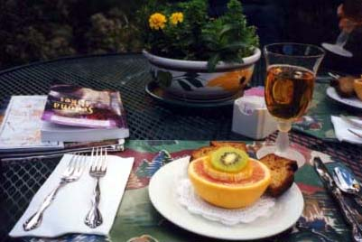

セドナ日記 〜 第２日目 98.5.5
素晴しいブレックファースト
 僕らの宿、アップル・オーチャード・インはB＆B、すなわちベッド＆ブレックファーストである。当然だが、朝食（ブレックファースト）がついてくる。僕は、B＆Bに泊まるのはこれが、初めてだった。
初めてのB＆Bでの朝食。場所は、裏の岩山が見える、テラス。このテラスには、緑色の金属のテーブルがある。このテーブルの表面はメッシュになっている。そこにランチョンマットがひかれ、お目当ての朝食が運ばれる。
僕らが席についたときには、先客はまだ、１組だった。このB＆Bでは、早起きのようである。
テーブルには、その日の朝食がセットされていた。フルーツにジュース。このフルーツが山盛り状態（といっても上品に盛り付けされている）で、すごく気持ちがいい。王様の気分である。青い空の下、おいしい朝食をとる。最高でしょう。食事がすすむにつれ、他の部屋の人達も起き出してくる。意外というか、当然というか、若いひとは（というか、まあ比較的という意味ですが....）僕らともう、１組のカップルだけで、他は皆さん、ちょっとお歳を召したかたばかりであった。確かにシーズンオフのこの時期にセドナに来るような人は、リタイヤした人達なのかもしれない。
その若いカップルはフロリダから来たようで、その日はグランドキャニオンに向かうとのことだった。グランドキャニオンはセドナから、車で２時間くらいだそうで、日帰りでもいける距離なので是非いくようにと、勧めてもらった。セドナの位置が、そんな所とは、そのときまで実は知らなかった。「そうか、そんなところか....」と感心してしまった。朝食は、フルーツのあと、フレンチトーストがでた。これがまたボリュームあるんです。残しそうになるくらい。でもおいしいから、がんばって全部いただきました。何度も書くけど、本当、王様気分。最高！
朝食を十分とったということで、昼は抜いてもいいくらいの充実度であった。実際、昼はりんごとチョコレートのかけらで済ました。ダイニングには篭の中にりんごがつまれていて、自由にとっていい（やっぱ、アップル・オーチャードだからね）。このりんごが、お昼になったのだった。
偶然見つけた、B＆Bだが、必然の選択だったという気がとてもしてきたのだった。最高の朝食のあとは、最初のボルテックスにむけて、出発！